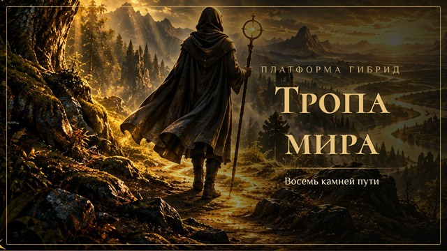

Дорожная карта целиком: восемь камней, у каждого — подразделы и честные отметки, что сделано, что сделано наполовину и чего ещё нет.
Проценты условные: сделанный пункт — целый, частичный — половина.
Это не «сколько людей у нас есть», а «когда мы готовы позвать столько людей». Числа пока предварительные — обсудим вместе, когда камни подрастут. Условия считаются из процентов камней ниже.